13 Individual Children
Of all the individual differences described to date in the literature on early child language, variations in rate present the least interesting challenge to traditional ‘universalist’ models of development, If it can be shown that all children go through the same basic sequence, activating a common set of structures and processes, then small variations in the onset time for specific language milestones might represent little more than a minor perturbation to a maturational theory (like variations in the onset of puberty). Putative variations in style of development are more problematic, because they raise questions about the order in which structures are acquired, and the mechanisms used to acquire those structures. (Bates et al. 1994)
In an early report on individual differences in vocabulary acquisition, Nelson (1973) noticed that there was substantial variation in how many nouns
“referential” (more than 50% nouns) - more object-focused, found to be less syntactically complex - faster vocabulary growth “expressive” (less than 50% nouns) - more self-focused, more syntactically complex
structure and strategy, referential vs. expressive distinction
Bates et al. (1994)
Further, idiosyncrasy in children’s vocabulary is an interesting measure suggested by Mayor and Plunkett (2014).
The general issue of this chapter is that there are many measures we can define regarding individual variability, and the trick will be telling signal from noise (and from artifact). We typically rely on three strategies. The first is to ask whether a particular measure is valid in the sense that it is related to some other aspect of the data. We are in the position of not having independent validation measures to apply to, but we can still reasonably ask whether one measure (e.g., proportion of nouns) is related to another (e.g., vocabulary for age). The second strategy is – as throughout – to look for consistency across samples in a particular pattern. Such consistency suggests some signal, though in each case we will try to be cautious about differentiating this signal from statistical artifact. The third strategy is to look for consistency in a particular measure throughout development (e.g., evaluating “test-retest” reliability of a measure).
Summarizing the conclusions from our various different sub-analyses:
Referential vs. expressive variation is present but is over-estimated by analyses that do not correct for vocabulary size, since smaller vocabularies tend to be more noun-heavy.
It is tricky to use comprehension data to estimate variability between individuals in how much they produce vs. comprehend, due to likely cross-linguistic differences in the uptake of instructions regarding comprehension.
13.1 Variation in Vocabulary Composition
In this subsection we examine the question of variation across children in referential vs. expressive vocabulary. Following Bates et al. (1994), we operationalize out the notion of a “referential” vocabulary as simply one that has relatively more nouns. While there are other more nuanced measures that we can construct, this one has the advantage of being directly related to the framework in Chapter 10. We use that framework investigate vocabulary composition in individuals. Recall that we computed the proportion of children’s vocabulary that was made up of nouns as a function of age in that chapter.
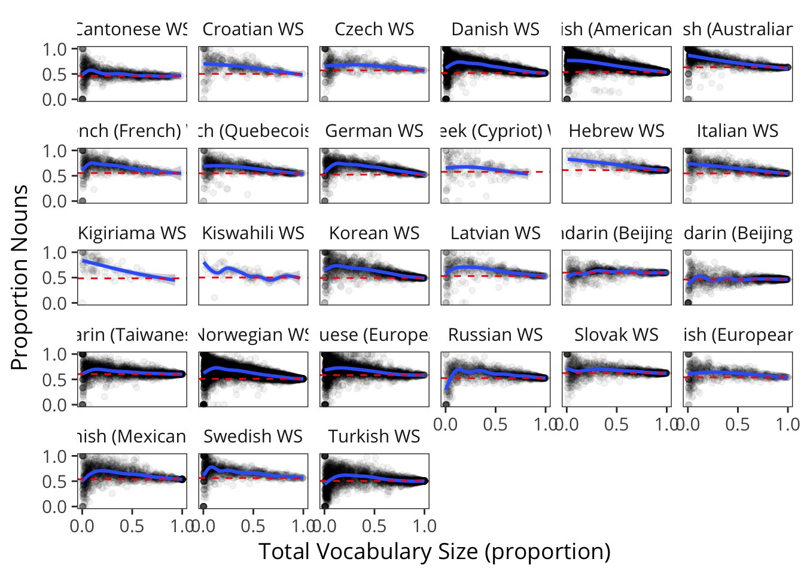 That pattern is shown in the figure above. It’s clear that there is an overall trend for an over-representation of nouns, as shown by the blue line (representing the smoothed mean proportion nouns) being above the red dashed line (total porportion nouns on the form). The size of this over-representation is the topic of Chapter 10. Here we examine variability in over-representation.
13.1.1 Variability and Vocabulary Size
We follow Nelson (1973), who suggests that chilren who are more referential in their style also have faster vocabulary growth.21 One way of cashing out this claim empirically is to suggest that the proportion of nouns in a child’s vocabulary should be a predictor of vocabulary size, over and above age. We evaluate this claim below.
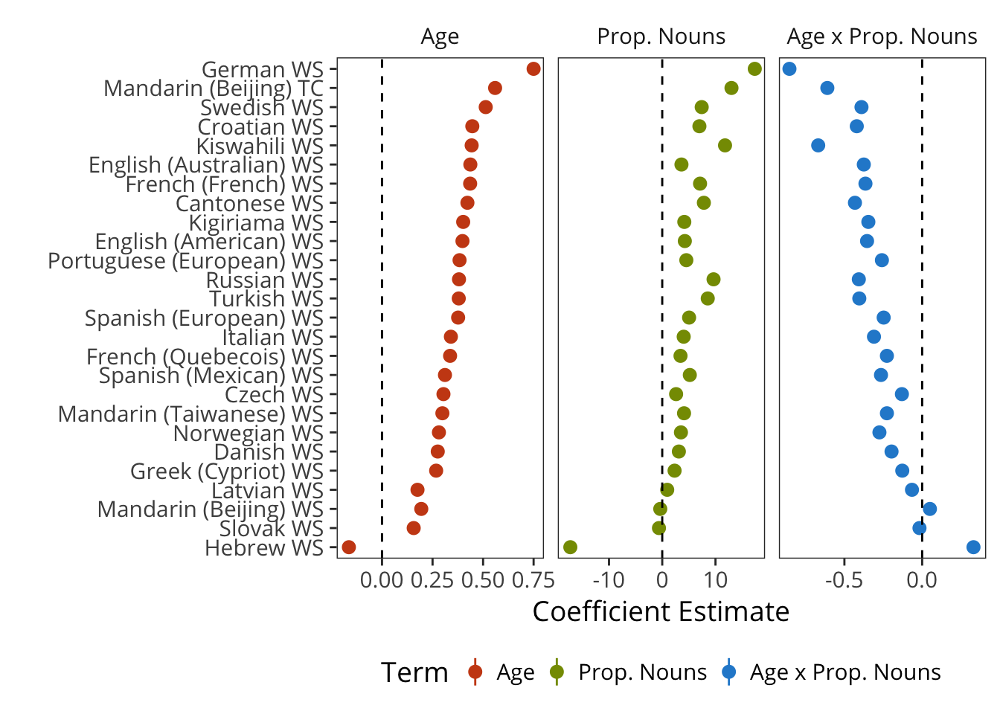
A simple model of this hypothesis is a GLM predicting the number of CDI words a child produces as a function of age, proportion nouns, and their interaction. The coefficients of this model are shown above. Age coefficients are positive (indicating more words with age) and proportion of nouns is positive as well, indicating an independent contribution of this variable over and above age. The interaction of the two is negative because proportion of nouns converges to the total proportion of nouns on the form as vocabulary is large, so this variable is uniform across children for older ages.
This result appears to provide support for the relationship between the referential/expressive distinction and vocabulary size. But, as noted by (???), the bigger your vocabulary is, the bigger your noun bias on average. Thus, the causality in the relation above could be reversed. Proportion nouns could be predictive of vocabulary size not because children with a particular style have bigger vocabularies, but because having more nouns in your vocabulary tends to indicate that you are further along.
Put another way, perhaps all children follow the same trajectory through the noun bias. Even in this scenario, knowing the size of a child’s noun bias will tell you something about vocabulary size, without that implying that the child is following a different trajectory.
One way to circumvent this critique statistically is to measure whether a particular child has a greater-than-average, vocabulary-adjusted noun-bias. In other words, if we remove the endogenous signal (the average correlation with noun bias and vocabulary), can we still find a relation with individuals’ degree of noun bias and vocabulary size? Will children with even more noun bias tend to have even larger vocabularies relative to age?
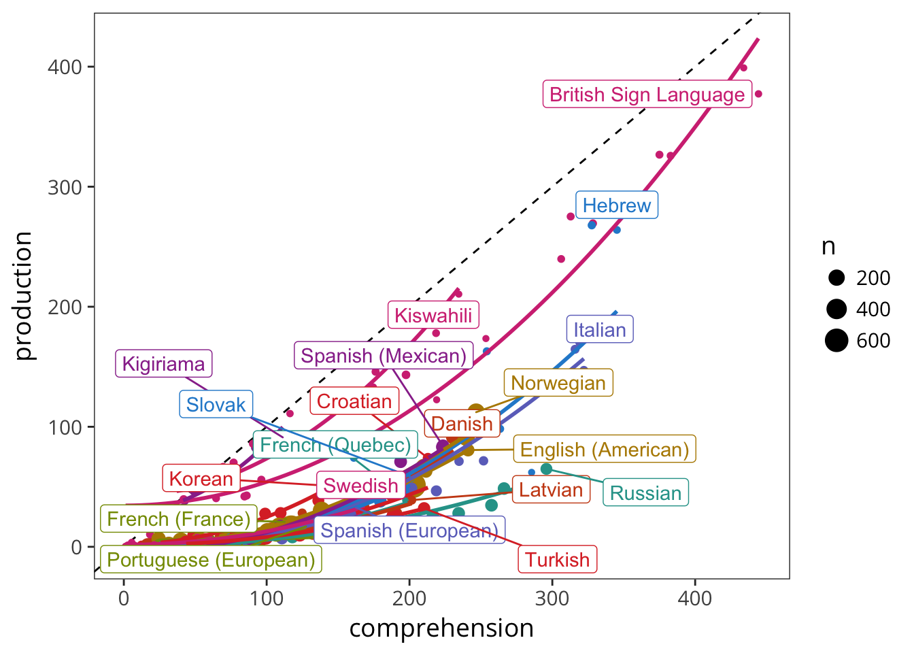
The figure above shows both the English noun-proportion data and the resulting residuals from that distribution when fit via a cubic model (blue curve). These residuals can then be used to test for incremental contributions to total vocabulary over and above age.

THIS MODEL APPEARS BROKEN - LOOK AT ANTI-CORRELATION OF RESIDUAL AND INTERACTION
As we might expect from the results presented earlier (see especwlly Figs 5 and i), the raw measure of referential style was significantly correlated with age(r=+0’3I, P<0’001) andtotalvocabularysize(r=+0’35,P<0’001), There was also a small but reliable correl8tion with birth order, indicating that later-born children have lower scores for referential style (r = - 0.12., P < 0’05). Finally, there were small but statistically significant co:nlntions with maternal education (r = +O’ 1 I, P < 0’05), paternal education (r = +O’II, P< 0’05) and paternal occupation (r = +0’10, P< 0’05). [n short, results obtained with the unadjusted scores for referential style replicate other reports in the literature using this measure. (Bates et al. 1994)
with percentiles:
The conelation with age was still significa.nt (r “’” +0’15, P < 0’01) - but notice that this is a positive correlation, suggesting that children high in referential style are actually somewhat older than children with proportionally fewer common nouns.
** ALSO NEEDS TO BE LOOKED AT IN WG DATA **
13.1.2 Quantifying variability in Bias
Again following Bates et al. (1994), we can quantify residual variability in noun bias.
We begin by doing this in Words and Sentences.
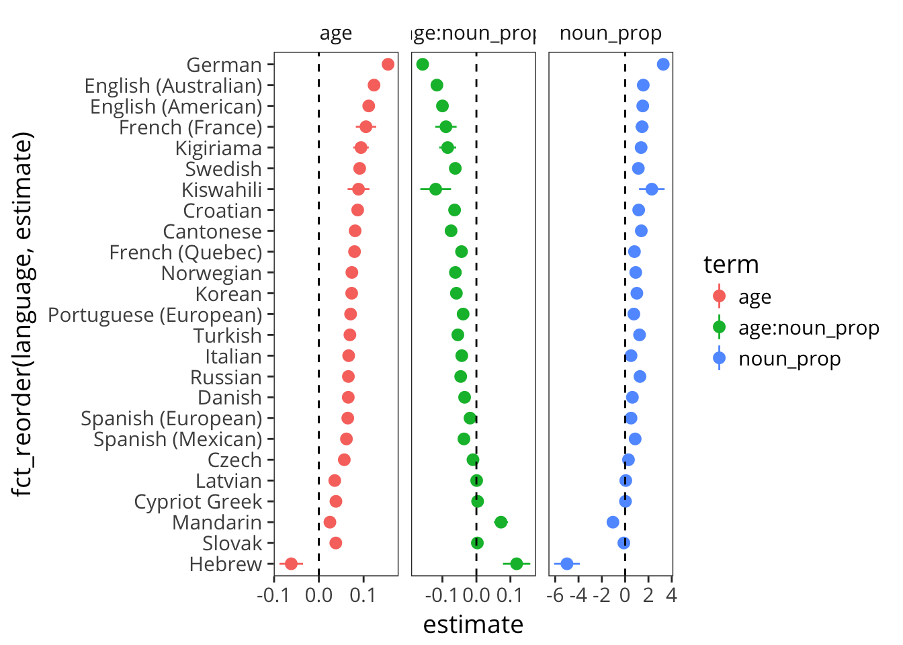
Variability was high but itself somewhat consistent. [** TODO: THINK ABOUT ERROR BARS **]
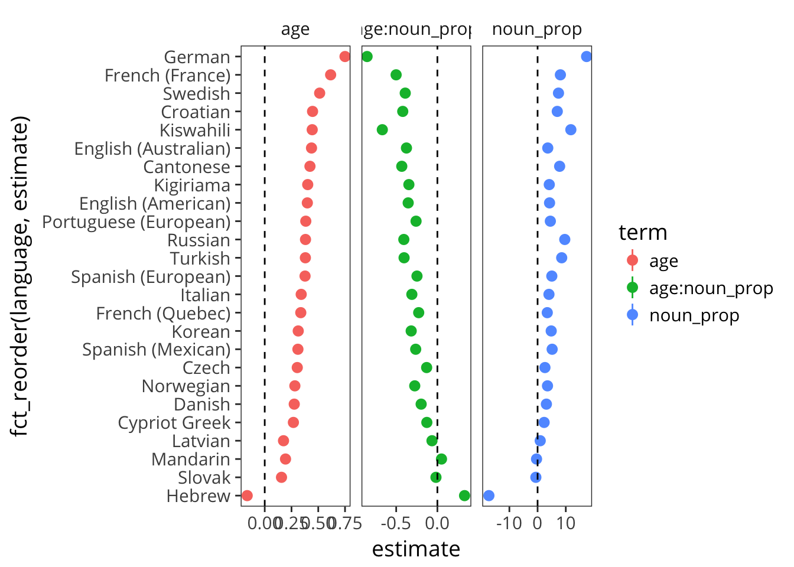
Bates et al. (1994) focus on variability being highest in the very earliest parts of word learning. We can verify this claim using Words and Gestures data.
 As discussed by Nelson (1973) and Bates et al. (1994), variability declines with age. Intuitively, this pattern makes sense – the point of most variability is when you have the smallest sample of words. A child who speaks one word can have either 0% or 100% noun representation. Everything gets less variable from there.
As discussed by Nelson (1973) and Bates et al. (1994), variability declines with age. Intuitively, this pattern makes sense – the point of most variability is when you have the smallest sample of words. A child who speaks one word can have either 0% or 100% noun representation. Everything gets less variable from there.
[ COULD DO CLOSED CLASS]
In analysing the correlates of closed-class style, we found some limited evidence in support of a link between rate of development (i,e. precocity) and closed-class proportion scores…
13.2 Variation in Production vs. Comprehension
Our next investigation concerns the question of how tightly comprehension and production are yoked within CDI data. Our assumption is that there is variability between children on this dimension – while some children produce a large amount of language, others appear to produce less but still understand substantial amounts. How does the ratio of production to comprehension vary across ages, and across cultures?
Before we begin the analysis it is important to be clear that some of the pattern in this variable could be due to variation between parents in under- or over-reporting comprehension (or for that matter, production, but we assume – and Appendix C confirms that production reports likely carries more signal). For example, we might be detecting variation in the threshold at which parents assume that a response indicates comprehension. Some parents might be very liberal and recall a generally-understood story that included a particular word, while others might be searching for a specific anecdote that clearly illustrates comprehension of that word.
Of course this type of analysis can only be conducted on WG-type forms, because of the presence of comprehension information. We begin by investigating the American English WG data as an example.
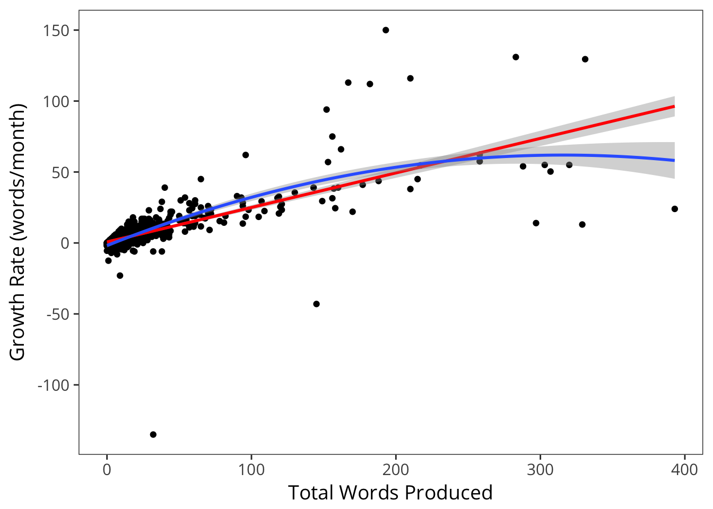
The figure above shows individual children’s comprehension and production plotted against one another. The diagonal indicates a child who comprehends and produces exactly the same number of words. In practice, this measure is always below the diagonal because by the design of the form, a child cannot “say but not understand” a particular word, they can only “understand” or “say and understand.” We can convert these data into a productivity ratio:
\[productivity = \frac{\# produced}{\# understood}\] and plot this ratio for all children.
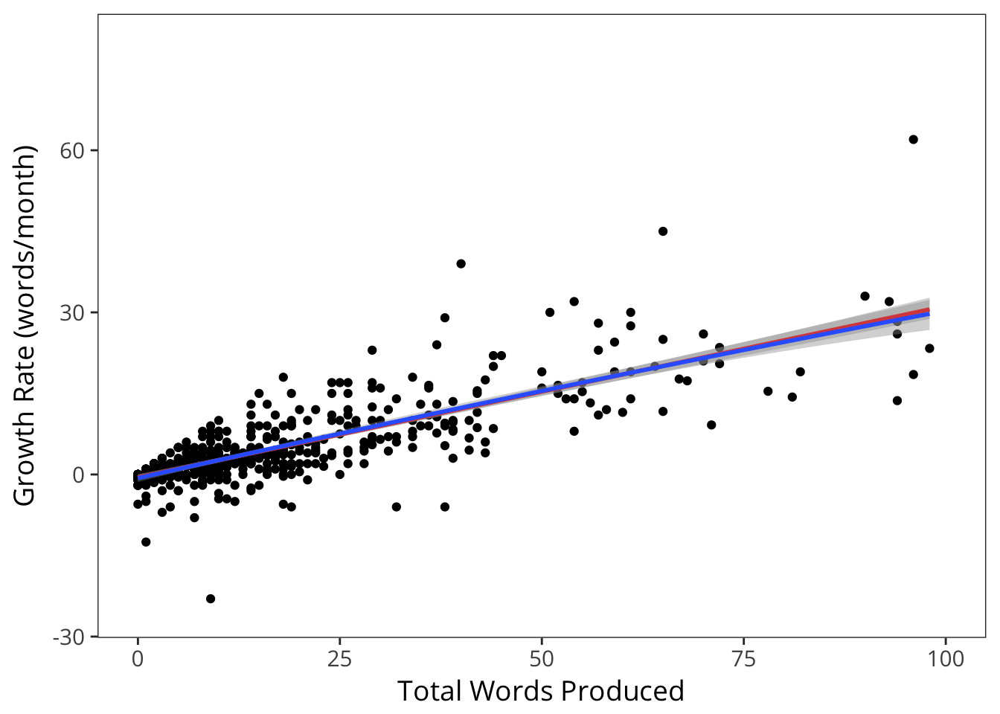 The resulting scatterplot is quite interpretable. It contains a few outliers at the very top of the range for very young children (whose parents report them producing and comprehending the same number of words). But for most others, the ratio is low, increasing from about 10% to 30% by the top of the form.

The figure above plots these productivity ratios by language for an age-restricted subset between 8 and 18 months. Plots are sorted by the mean productivity ratio. While the majority of languages show the same pattern as English (an increase from around 10% to 30%) there are some outliers that show a flatter slope.
[Note that there is currently an error with Kiswahili and Kigiriama but we are fixing this].

We can see this pattern even better by plotting the best-fit lines across languages. Nearly all of these go up with age and have similar slopes.

Going back to the scatter plots, however, in nearly every language to one degree or another, we see ratios > .95, indicating that parents are essentially not using “understands” as a separate option.
In this table, we see that a number of samples have substantial proportions of parents reporting comprehension in this way. While it is possible that these numbers represent actual children whose production is synchronized with their comprehension, a more parsimonious explanation is that there are local variations in administration, leading to some fraction of parents not completing the form properly. In particular, it does not appear that these “no comprehension without production” children are the tail of a shifted distribution of productivity ratios; instead, they appear to be due to a separate small population. Yet despite that they appear to have an outsized effect on our estimates of the development of productivity ratios across languages.In sum, although the relationship between production and comprehension is a fascinating locus for individual differences, we may not be able to measure this relationship effectively using cross-linguistic comprehension data. Further, these analyses underscore the importance of instructions regarding comprehension in CDI administration.
13.3 Variation in Vocabulary Growth Rate
Another potential locus for individual differences is the rate of growth. As already discussed in Chapter 4, there is substantial variability between children in vocabulary size. As we showed there, across many languages there is a consistent – and high – rate of variability between children.
Because these data were cross-sectional in nature rather than longitudinal, they cannot answer the question of whether the variability observed is stable as well as substantial (parphrasing Bates). In this and the next subsection, we make use of longitudinal data in the Wordbank dataset to investigate this idea.
In our first investigation of the longitudinal data, we look at how stable individual children are. There are only a small number of deeply longitudinal corpora in Wordbank, so we will limit our investigation to two languages: Norwegian and English. Furthermore, the largest group of longitudinal data cover the WS form so we restrict to these data for simplicity. Within each of these datasets, the modal number of observations is two, but there are some children with more than 10 CDIs on record.
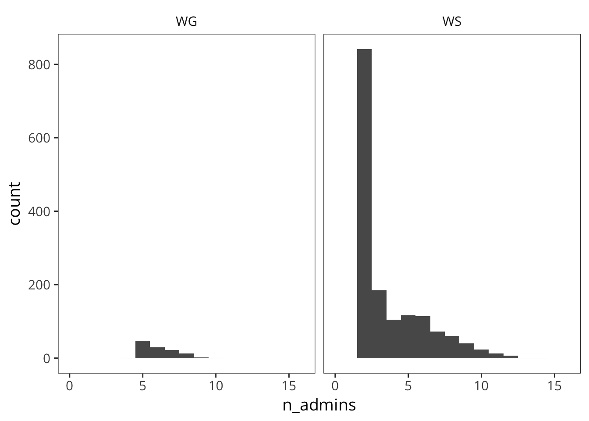 Sampling only those children who were measured a large number of times (>10, Norwegian only due to data sparsity issues in English), the trajectories appear quite stable.
One way to operationalize the question of stability is how children’s percentile ranks tend to change over time. We examine that question below.
We do this by creating an empirical CDF for each age group. We could use a model-based method (e.g., the gcrq method used in the Wordbank app and Chapter 4 and 5) but in practice we have enough data in each of these cases that this method should perform well. [TODO: say how much in the worst age bin]
Replot those top ones.
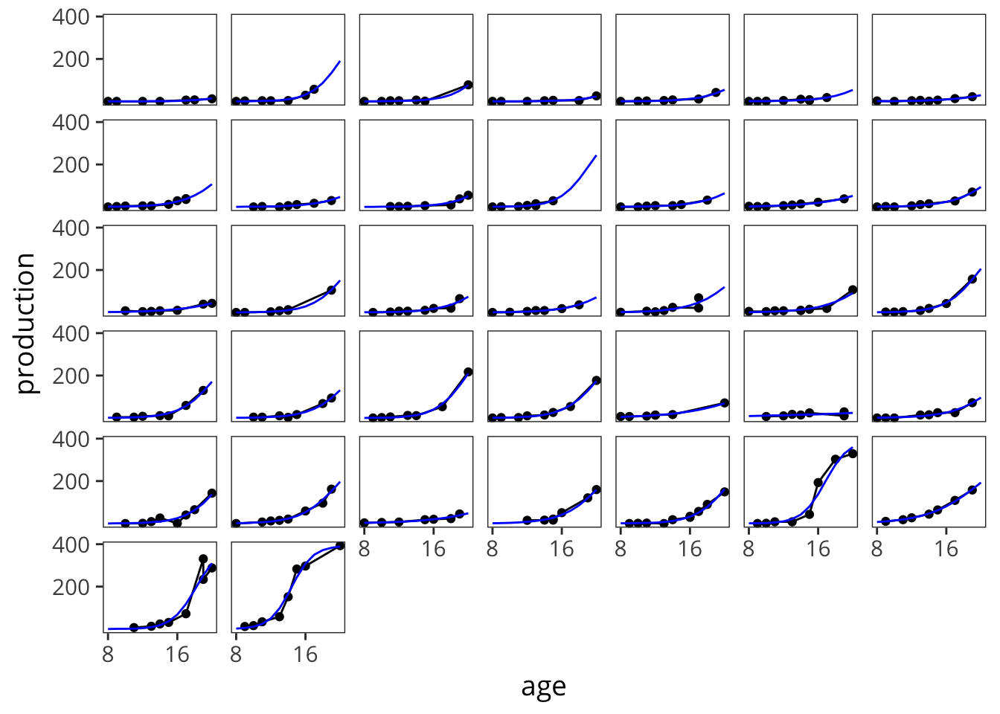 We can see that these are visually quite stable. We can quantify this by the standard deviation.
#> # A tibble: 2 x 3
#> language sd mean_pairwise_diff
#> <chr> <dbl> <dbl>
#> 1 English (American) 0.108 0.0583
#> 2 Norwegian 0.108 0.0321Another way to look at this is the difference in percentile ranks by the age gap.
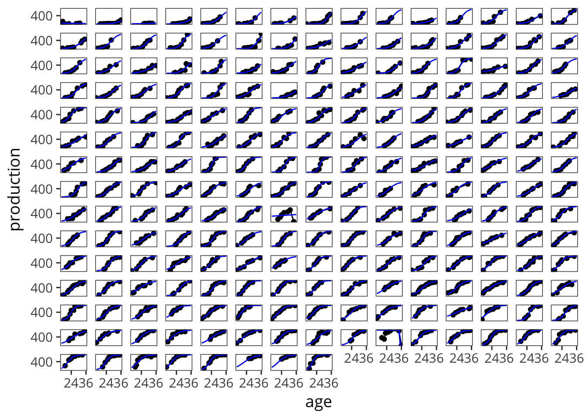

13.4 “Spurts” in Vocabualry
A special case of the preceeding
Brent & Siskind
To address this question, we examine the Norwegian dataset.
and WG
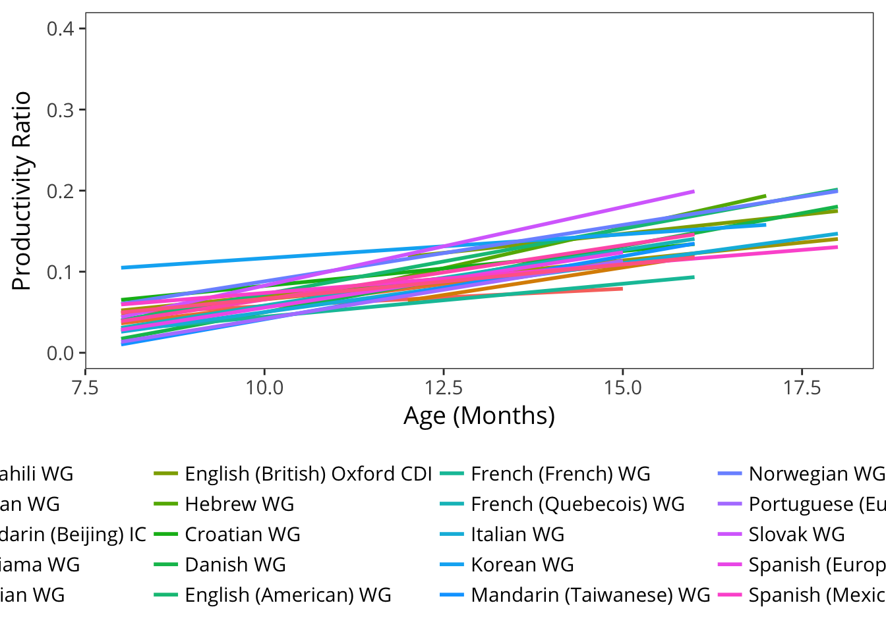
13.4.1 GLMs
Does a GLM fit the Norwegian longitudinal growth?


13.4.2 Ganger & Brent
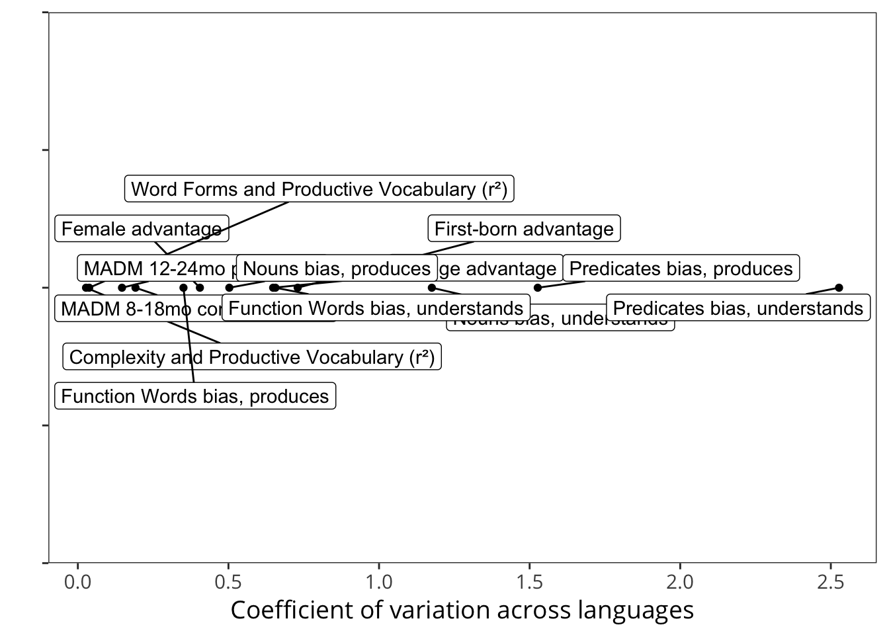

13.5 Overlap in vocabulary
Mayor and Plunkett (2014) create several procedures for examining idiosyncrasy of vocabulary. We are able to use the most direct one because of the accessibility of full item-wise data.
This direct measure is computed by calculating the mean Euclidean distance between individual vocabularies and the mean vocabulary, where each word is either understood/produced (coded as 1 in a vector containing all words on the CDI) or not understood/not produced (coded as 0). As this metric is heavily dependent on the total number of words known on the CDI, these mean Euclidean distances are then normalized by the underlying binomial distribution, produced by measuring the Euclidean distance when vector values are drawn at random. The Normalized Euclidean Distance (NED hereafter) is computed according to the following equation:
\[NED = \frac{\sum_{i \in N} \sum_{j \in W} (x_{ij} - p_i)^2}{\sum_{i \in N} \sum_{j \in W} (y_{ij} - q_i)^2}\]
where \(W\) refers to the number of words on the CDI, \(N\) the number of infants, \(x_{ij}\) is equal to 1 if the word \(i\) is understood/produced by infant \(j\) and 0 otherwise. \(p_i\) corresponds to the fraction of infants that understand/ produce word \(i\). \(y_{ij}\) corresponds to the random assignment to word \(i\) in run \(j\), where 1 and 0 are assigned randomly so that mean vocabularies match and \(q_i\) corresponds to the fraction of runs for which word \(i\) is understood/produced.
I take \(y_{ij}\) to be a permutation of words within vocabularies.
13.6 Vocabulary Composition and Syntactic Growth
Referential style was also associated with a variety of other variables like socioeconomic status and birth order that are themselves related to vocabulary outcomes.↩